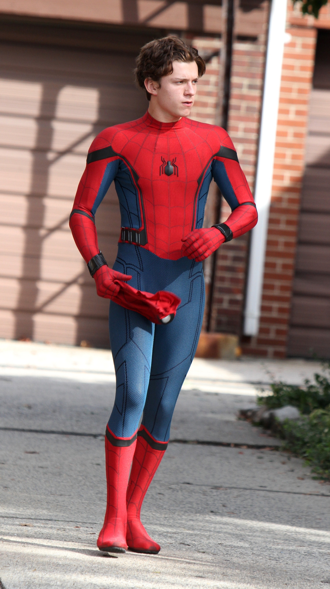
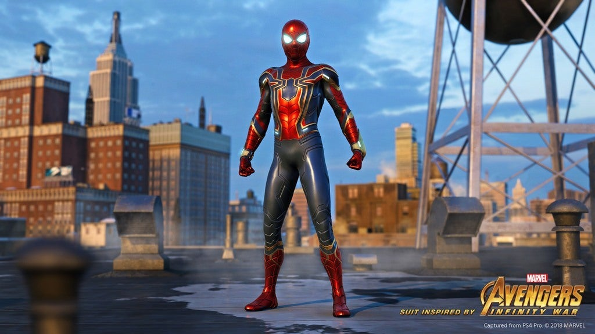
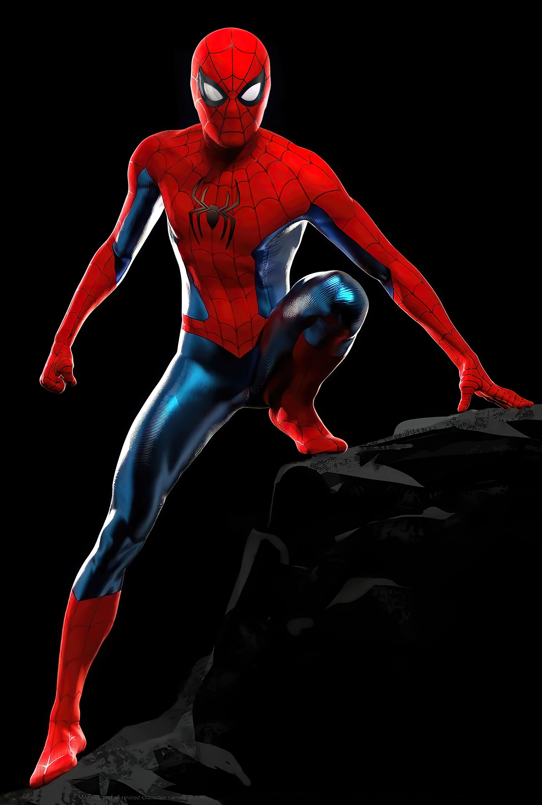

The Stark Suit (Homecoming Suit)
First introduced in Captain America: Civil War and used extensively in Spider-Man: Homecoming, the Stark Suit was a technologically advanced costume designed by Tony Stark. It featured a built-in AI assistant (Karen), web-shooters with multiple settings, enhanced durability, and a tracking system. This suit symbolized Peter’s early reliance on Stark’s guidance and advanced technology, helping him grow as a hero while learning responsibility.
Iron-Spider Suit (Marvel Infinity War)
Debuting in Avengers: Infinity War, the Iron Spider Suit was an upgrade given to Peter by Tony Stark before the battle against Thanos. Made from nanotechnology, it included mechanical spider legs (Waldoes), instant armor deployment, and enhanced durability. This suit marked Spider-Man’s transition into high-stakes battles alongside the Avengers. However, by No Way Home, Peter realized he couldn’t always rely on Stark’s tech, leading to a return to a simpler design.
Classic Suit
At the end of Spider-Man: No Way Home, Peter crafted his own Classic Red and Blue Suit, inspired by previous Spider-Men from different universes. Unlike his earlier suits, this one was completely self-made, signifying Peter’s independence after losing his connection to Stark’s resources. With its bright colors and traditional web pattern, this suit reflects Spider-Man’s classic look and his return to his roots as a street-level hero.